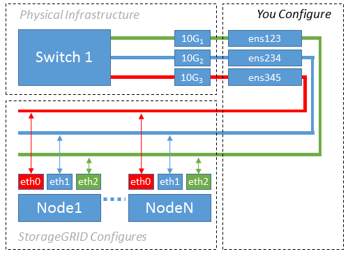

문서 변경 요청
문서 변경 요청 이 페이지 편집
이 페이지 편집 기여하는 방법 자세히 알아보기
기여하는 방법 자세히 알아보기
본 한국어 번역은 사용자 편의를 위해 제공되는 기계 번역입니다. 영어 버전과 한국어 버전이 서로 어긋나는 경우에는 언제나 영어 버전이 우선합니다.
예 1: 물리적 NIC 또는 가상 NIC에 1:1 대 1 매핑
기여자
예제 1에서는 호스트측 구성이 거의 또는 전혀 필요하지 않은 간단한 물리적 인터페이스 매핑에 대해 설명합니다.

Linux 운영 체제는 설치 또는 부팅 중에 또는 인터페이스가 핫 애드 상태일 때 자동으로 ensXYZ 인터페이스를 생성합니다. 부팅 후 인터페이스가 자동으로 실행되도록 설정하는 것 외에는 구성이 필요하지 않습니다. 나중에 구성 프로세스에서 올바른 매핑을 제공할 수 있도록 StorageGRID 네트워크(그리드, 관리자 또는 클라이언트)에 해당하는 ensXYZ를 결정해야 합니다.
이 그림에서는 여러 StorageGRID 노드를 보여 줍니다. 그러나 일반적으로 단일 노드 VM에 이 구성을 사용합니다.
스위치 1이 물리적 스위치인 경우 액세스 모드에 대해 인터페이스 10G110G3에 연결된 포트를 구성하고 해당 VLAN에 배치해야 합니다.